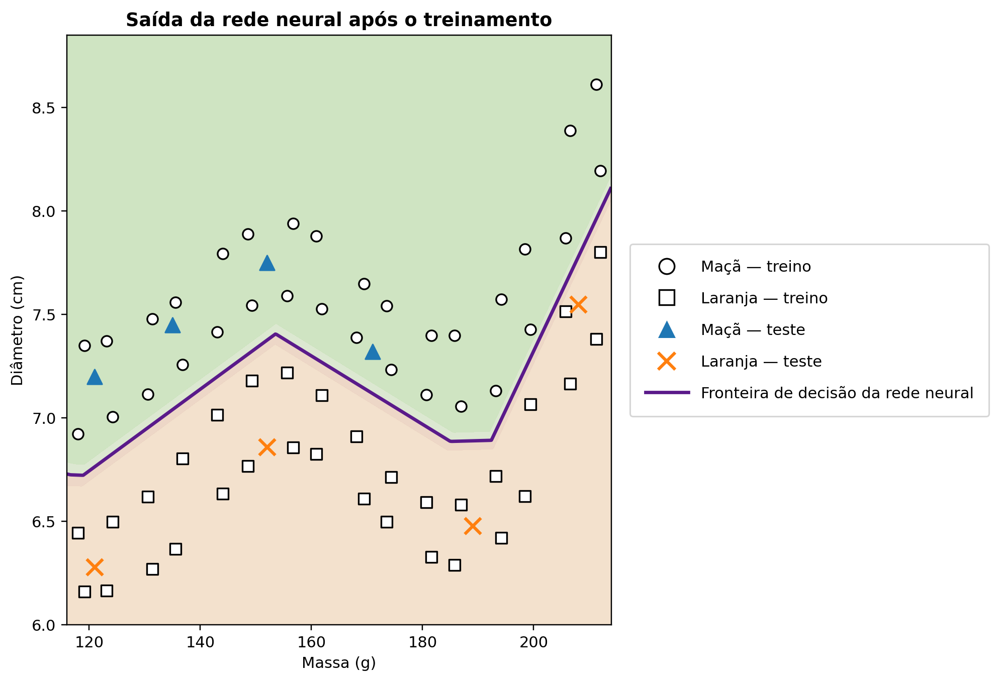

O exemplo em Python, passo a passo
Esta página é o núcleo computacional do NeuralMath. O código é pequeno o bastante para ser lido integralmente e completo o bastante para mostrar como uma rede neural realmente aprende.
1. Dados: um domínio amplo, mas controlado
O conjunto de treinamento contém 64 pontos e o conjunto de teste ilustrativo contém 8. Os pontos são sintéticos, mas massa e diâmetro permanecem em faixas plausíveis. Uma curva suave de referência serve apenas para gerar uma geometria não trivial; ela não é fornecida à rede.
def base_boundary(m):
return (
6.68
+ 0.74 * np.exp(-((m - 155) / 20) ** 2)
+ 1.50 / (1 + np.exp(-(m - 202) / 5))
)
X_train = np.vstack([a1, a2, l1, l2])
y_train = np.array([1.0] * 32 + [0.0] * 32)2. Padronização
Massa e diâmetro possuem escalas numéricas diferentes. Por isso, média e desvio-padrão calculados no conjunto de treinamento são usados para transformar tanto treino quanto teste. Os dados de teste não determinam os parâmetros da normalização.
mean = X_train.mean(axis=0)
std = X_train.std(axis=0)
Xn = (X_train - mean) / std3. Arquitetura: 2–12–1
Duas entradas alimentam uma camada oculta com doze neurônios ReLU, seguida por uma saída sigmoide. Isso produz 49 parâmetros treináveis. A camada oculta é expressiva o suficiente para representar uma fronteira visivelmente não linear e ainda simples de inspecionar.
rng = np.random.default_rng(42)
W1 = 0.1 * rng.standard_normal((12, 2))
b1 = np.zeros(12)
W2 = 0.1 * rng.standard_normal(12)
b2 = 0.04. Propagação direta
Para cada entrada, a rede calcula uma transformação afim, aplica ReLU, combina as ativações ocultas e, por fim, aplica a sigmoide. Esse é o caminho da previsão.
z1 = W1 @ x + b1
h = relu(z1)
z2 = W2 @ h + b2
y_hat = sigmoid(z2)5. Retropropagação
O código deriva a perda quadrática através da sigmoide e depois da camada ReLU. Nenhum sistema de diferenciação automática é usado: a regra da cadeia aparece explicitamente no programa.
delta2 = (y_hat - target) * y_hat * (1 - y_hat)
dW2 = delta2 * h
db2 = delta2
delta1 = (delta2 * W2) * relu_derivative(z1)
dW1 = np.outer(delta1, x)
db1 = delta16. Descida do gradiente estocástica
A cada época, os exemplos são embaralhados. Os parâmetros são atualizados após cada exemplo e a perda média de treinamento é recalculada com os parâmetros fixos ao final da época.
for epoch in range(n_epochs):
for i in rng.permutation(len(Xn)):
# forward pass, backpropagation, update
W1 -= learning_rate * dW1
b1 -= learning_rate * db1
W2 -= learning_rate * dW2
b2 -= learning_rate * db27. A fronteira de decisão aprendida
Depois do treinamento, o código avalia a rede em uma grade densa no plano massa–diâmetro. O nível ŷ = 0,5 torna-se a fronteira de decisão. Todos os pontos de treinamento permanecem visíveis na figura.
masses = np.linspace(116, 214, 500)
diameters = np.linspace(6.0, 8.85, 500)
M, D = np.meshgrid(masses, diameters)
grid = np.column_stack([M.ravel(), D.ravel()])
P = predict(grid, mean, std, W1, b1, W2, b2).reshape(M.shape)
ax.contour(M, D, P, levels=[0.5], linewidths=2.2)
8. Reprodutibilidade
Uma semente fixa torna o experimento determinístico no ambiente NumPy documentado. O mesmo script produz a figura distribuída com o projeto.
rng = np.random.default_rng(42)
# The same training-set statistics, initialization,
# example order generator and hyperparameters are reused.